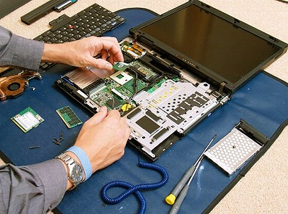

Laptopok szererése

Minden laptop életében eljön az a pillanat, amikor válaszút elé kerülünk: váljunk meg tőle és váltsunk egy újabb, szebb, okosabb, gyorsabb gépre, vagy bővítsük a meglévőt. Magától értetődően a második a költséghatékonyabb opció, a kérdés csupán az, hogy a bővítéssel kielégíti-e az új igényeket.
A bővítés másik sarkalatos kérdése, hogy pontosan mit is kéne cserélni a laptopban ahhoz, hogy megfeleljen az elvárásainknak. Nem mindegy, hogy memóriából kerül több bele, vagy a merevlemezt cseréjük a magyarul igen szerencsétlenül szilárdtest meghajtónak elnevezett SSD-re.Ha pedig sikerült kitalálnunk, hogy melyik részegységet és milyenre szeretnénk cserélni, akkor annak is jelentősége van, hogy a bővítést otthon mi magunk végezzük el vagy szakemberre bízzuk.Ma betekintést nyújtok ezen kérdésekbe, és azt is megtudhatod, hogy mitévő legyél, ha a bővítés után nem úgy, ahogy elvártad, vagy egyáltalán nem működik a laptopod.
Laptopok szererése
A laptop javítása házilag meglehetősen körülményes munka, és teljesen felesleges is, hiszen a szervizben a szükséges cserealkatrész árában már benne van a szerelés is. A legtöbb laptop műanyag háza a csavarozás mellett ragasztással és műanyag kapcsokkal is el van látva. Ha saját kezűleg szereled szét a laptopodat, nagyon kell vigyázni, hogy a műanyag füleket és pöcköket ne törd el a szétszedésnél. A laptop szervizben a szakemberek már gyakorlott kézzel szedik szét a műanyag laptop házat és távolítják el a borítást.Ha már régi a laptopod, és csak azért szeretnéd szétszedni, hogy megtisztogasd a hűtőrendszert és a ventilátort, akkor előfordulhat az a helyzet, hogy megéri saját kezűleg, otthon, házilag szétszedni a laptopot.
Laptopok szererése
A laptop szétszedésének első mozzanata a műanyag ház megbontása. Természetesen csak az áramtalanítás, az akkumulátor, a memória, a merevlemez és a DVD meghajtó eltávolítása után látunk neki a műanyag laptop burkolat szétszedésének.Fontos megjegyezni, hogy be kell tartani a csavarozási sorrendet. Egyes modelleknél a laptop kijelzőjének zsanérjait csavar és műanyag fülek is tartják. Ilyenkor először ki kell nyitni a laptop fedelét, és csak utána szabad kicsavarni a zsanérok rögzítő csavarjait. Ha a csavarokkal kezdjük, akkor a fedél felnyitásánál a rövid zsanér az óriási erőkar miatt letöri a műanyag füleket és pöcköket a laptopházban.A laptop alján jól láthatóan megjelölték a billentyűzet rögzítő csavarjait. Ha a billentyűzet mégis nehezen mozdulna meg, akkor gyanakodjunk arra, hogy valahol még egy csavarnak kell lennie. Előfordul, hogy a memória, a merevlemez vagy a Wifi kártya alatt találjuk ezt.
Itt egy link